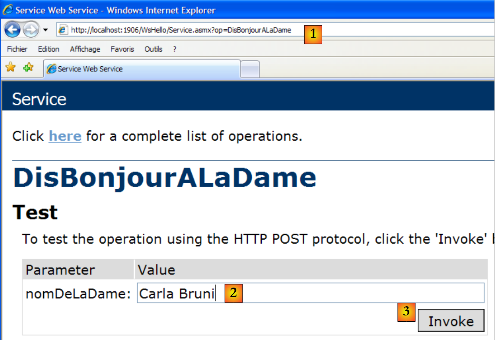
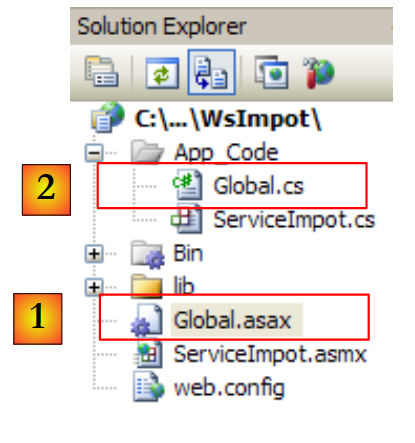
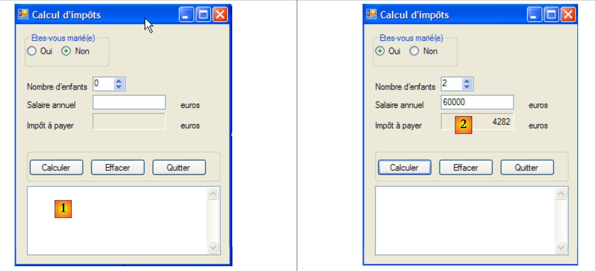
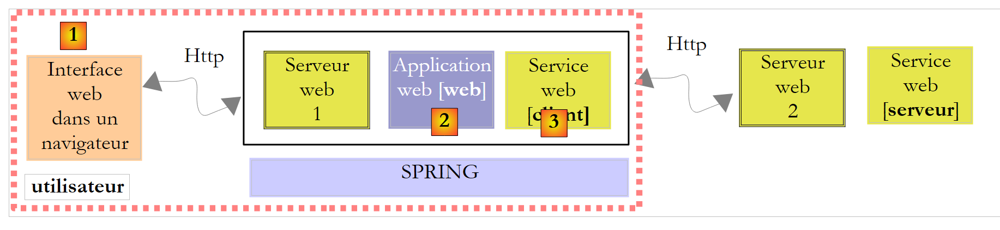
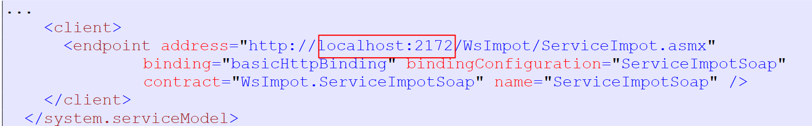

12. Webdienste
12.1. Introduction
Im vorigen Kapitel haben wir mehrere TCP/IP-Client-Server-Anwendungen vorgestellt. Da die Clients und der Server Textzeilen austauschen, können sie in jeder beliebigen Sprache geschrieben werden. Der Client muss lediglich das vom Server erwartete Kommunikationsprotokoll kennen.
Webdienste sind ebenfalls TCP/IP-Serveranwendungen. Sie weisen folgende Merkmale auf:
- Sie werden von Webservern gehostet, und das Protokoll für den Client-Server-Austausch ist HTTP (HyperText Transport Protocol), ein Protokoll, das auf TCP-IP aufbaut.
- Der Webdienst verfügt unabhängig vom angebotenen Dienst über ein Standard-Kommunikationsprotokoll. Ein Webdienst bietet verschiedene Dienste an: S1, S2, …, Sn. Jeder dieser Dienste erwartet vom Client übergebene Parameter und gibt diesem ein Ergebnis zurück. Für jeden Dienst muss der Client Folgendes wissen:
- den genauen Namen des Dienstes, falls
- die Liste der Parameter, die bereitgestellt werden müssen, sowie deren Typ
- den Typ des vom Dienst zurückgegebenen Ergebnisses
Sobald diese Elemente bekannt sind, folgt der Client-Server-Dialog unabhängig vom abgefragten Webdienst dem gleichen Format. Die Programmierung der Clients wird dadurch standardisiert.
- Aus Sicherheitsgründen vor Angriffen aus dem Internet verfügen viele Organisationen über private Netzwerke und öffnen nur bestimmte Ports ihrer Server für das Internet: im Wesentlichen Port 80 des Webdienstes. Alle anderen Ports sind gesperrt. Daher werden Client-Server-Anwendungen, wie sie im vorigen Kapitel vorgestellt wurden, innerhalb des privaten Netzwerks (Intranet) aufgebaut und sind in der Regel von außen nicht zugänglich. Die Bereitstellung eines Dienstes auf einem Webserver macht ihn für die gesamte Internet-Community zugänglich.
- Der Webdienst lässt sich als entferntes Objekt modellieren. Die angebotenen Dienste werden dann zu Methoden dieses Objekts. Ein Client kann auf dieses entfernte Objekt zugreifen, als wäre es lokal. Dadurch wird der gesamte Teil der Netzwerkkommunikation verborgen, und es kann ein von dieser Schicht unabhängiger Client entwickelt werden. Sollte sich diese Schicht ändern, muss der Client nicht angepasst werden.
- Wie bei den im vorigen Kapitel vorgestellten TCP/IP-Client-Server-Anwendungen können Client und Server in einer beliebigen Sprache geschrieben werden. Sie tauschen Textzeilen aus. Diese bestehen aus zwei Teilen:
- die für das Protokoll HTTP erforderlichen Kopfzeilen
- den Hauptteil der Nachricht. Bei einer Antwort des Servers an den Client hat dieser das Format XML (eXtensible Markup Language). Bei einer Anfrage des Clients an den Server kann der Hauptteil der Nachricht verschiedene Formen annehmen, darunter XML. Die Anfrage XML des Clients kann ein spezielles Format haben, das als SOAP (Simple Object Access Protocol) bezeichnet wird. In diesem Fall folgt auch die Antwort des Servers dem Format SOAP.
Die Architektur einer auf einem Webdienst basierenden Client-Server-Anwendung sieht wie folgt aus:
 |
Es handelt sich um eine Erweiterung der 3-Schichten-Architektur, der spezialisierte Netzwerkkommunikationsklassen hinzugefügt werden. Eine ähnliche Architektur haben wir bereits in Abschnitt 11.9.1 bei der grafischen Windows-Client-Anwendung und dem TCP-Steuer-Server kennengelernt.
Lassen Sie uns diese allgemeinen Ausführungen anhand eines ersten Beispiels verdeutlichen.
12.2. Ein erster Webdienst mit Visual Web Developer
Wir werden eine erste Client-Server-Anwendung mit der folgenden vereinfachten Architektur erstellen:
 |
12.2.1. Der Serverteil
Wir haben bereits erwähnt, dass ein Webdienst von einem Webserver gehostet wird. Das Erstellen eines Webdienstes fällt in den allgemeinen Rahmen der serverseitigen Webprogrammierung. Wir hatten zuvor bereits Gelegenheit, Web-Clients zu schreiben, was ebenfalls zur Webprogrammierung gehört, diesmal jedoch auf der clientseitigen Seite. Der Begriff „Webprogrammierung“ bezieht sich meist eher auf die serverseitige als auf die clientseitige Programmierung. Für die Entwicklung von Webdiensten oder allgemeiner von Webanwendungen ist Visual C# nicht das geeignete Werkzeug. Wir werden Visual Developer verwenden, eine der Express-Versionen von Visual Studio 2008, die unter der Adresse [2] heruntergeladen werden kann: [1]: [http://msdn.microsoft.com/fr-fr/express/future/bb421473(en-us).aspx] (Mai 2008):
 |
- [1]: Die Download-Adresse
- [2]: Registerkarte „Downloads“
- [3]: Visual Developer 2008 herunterladen
Um einen ersten Webdienst zu erstellen, können Sie nach dem Start von Visual Developer wie folgt vorgehen:
 |
- [1]: Wählen Sie die Option „Datei / Neue Website“
- [2]: Wählen Sie den Anwendungstyp „Webdienst“ (ASP.NET)
- [3]: Wählen Sie die Entwicklungssprache: C#
- [4]: Geben Sie den Ordner an, in dem das Projekt erstellt werden soll
 |
- [5]: Das in Visual Web Developer erstellte Projekt
- [6]: Der Projektordner auf der Festplatte
Eine Webanwendung ist in Web Developer wie folgt aufgebaut:
- ein Stammverzeichnis, in dem sich die Dokumente der Website befinden (statische HTML-Webseiten, Bilder, dynamische .aspx-Webseiten, .asmx-Webdienste usw.). Dort befindet sich auch die Datei „[web.config]“, die Konfigurationsdatei der Webanwendung. Sie erfüllt dieselbe Funktion wie die Datei „[App.config]“ bei Windows-Anwendungen und ist genauso aufgebaut.
- ein Ordner „[App_Code]“, in dem sich die zu kompilierenden Klassen und Schnittstellen der Website befinden.
- einen Ordner „[App_Data]“, in dem Daten abgelegt werden, die von den Klassen in „[App_Code]“ verarbeitet werden. Dort kann sich beispielsweise eine SQL-Server-Datenbank (*.mdf) befinden.
[Service.asmx] ist der Webdienst, dessen Erstellung wir beantragt haben. Er enthält lediglich die folgende Zeile:
<%@ WebService Language="C#" CodeBehind="~/App_Code/Service.cs" Class="Service" %>
Der obige Quellcode ist für den Webserver bestimmt, auf dem die Anwendung gehostet wird. Im Produktionsbetrieb ist dieser Server in der Regel IIS (Internet Information Server), der Webserver von Microsoft. Visual Web Developer verfügt über einen integrierten Lightweight-Webserver, der im Entwicklungsmodus verwendet wird. Die vorstehende Anweisung weist den Webserver an:
- [Service.asmx] ist ein Webdienst (Anweisung WebService)
- der in C# geschrieben ist (Attribut Language)
- dass sich der C#-Code des Webdienstes in der Datei [~/App_Code/Service.cs] befindet (Attribut CodeBehind). Dort wird der Webserver ihn zum Kompilieren abrufen.
- dass die Klasse, die den Webdienst implementiert, den Namen Service trägt (Attribut Class)
Der von Visual Developer generierte C#-Code [Service.cs] für den Webdienst lautet wie folgt:
using System.Web.Services;
[WebService(Namespace = "http://tempuri.org/")]
[WebServiceBinding(ConformsTo = WsiProfiles.BasicProfile1_1)]
// Damit dieser Webdienst über ein Skript unter Verwendung von ASP.NET AJAX aufgerufen werden kann, entfernen Sie das Kommentarzeichen vor der folgenden Zeile.
// [System.Web.Script.Services.ScriptService]
public class Service : System.Web.Services.WebService
{
public Service () {
//Entfernen Sie die Auskommentierung der folgenden Zeile, wenn Sie gestaltete Komponenten verwenden
//InitializeComponent();
}
[WebMethod]
public string HelloWorld() {
return "Hello World";
}
}
Die Klasse Service ähnelt einer klassischen C#-Klasse, wobei jedoch einige Punkte zu beachten sind:
- Zeile 7: Die Klasse leitet sich von der Klasse WebService ab, die im Namensraum System.Web.Services definiert ist. Diese Vererbung ist nicht immer zwingend erforderlich. Insbesondere in diesem Beispiel könnte man darauf verzichten.
- Zeile 3: Der Klasse selbst ist ein Attribut „[WebService(Namespace="http://tempuri.org/")]“ vorangestellt, das dem Webdienst einen Namensraum zuweisen soll. Ein Klassenanbieter weist seinen Klassen einen Namensraum zu, um ihnen einen eindeutigen Namen zu geben und so Konflikte mit Klassen anderer Anbieter zu vermeiden, die denselben Namen tragen könnten. Bei Webdiensten verhält es sich genauso. Jeder Webdienst muss durch einen eindeutigen Namen identifiziert werden können, hier durch http://tempuri.org/. Dieser Name kann beliebig sein. Er muss nicht unbedingt die Form einer HTTP-URI haben.
- Zeile 15: Der Methode „HelloWorld“ ist das Attribut „[WebMethod]“ vorangestellt, das dem Compiler mitteilt, dass die Methode für Remote-Clients des Webdienstes sichtbar gemacht werden soll. Eine Methode, der dieses Attribut nicht vorangestellt ist, ist für die Clients des Webdienstes nicht sichtbar. Es könnte sich um eine interne Methode handeln, die von anderen Methoden verwendet wird, aber nicht zur Veröffentlichung bestimmt ist.
- Zeile 9: Der Konstruktor des Webdienstes. Er wird in unserer Anwendung nicht benötigt.
Die generierte Klasse „[Service.cs]“ wird wie folgt umgewandelt:
using System.Web.Services;
[WebService(Namespace = "http://st.istia.univ-angers.fr")]
[WebServiceBinding(ConformsTo = WsiProfiles.BasicProfile1_1)]
public class Service : System.Web.Services.WebService
{
[WebMethod]
public string DisBonjourALaDame(string nomDeLaDame) {
return string.Format("Bonjour Mme {0}", nomDeLaDame);
}
}
Die für die Webanwendung generierte Konfigurationsdatei [web.config] lautet wie folgt:
<?xml version="1.0"?>
<!--
Note: As an alternative to hand editing this file you can use the
web admin tool to configure settings for your application. Use
the Website->Asp.Net Configuration option in Visual Studio.
A full list of settings and comments can be found in
machine.config.comments usually located in
\Windows\Microsoft.Net\Framework\v2.x\Config
-->
<configuration>
<configSections>
<sectionGroup name="system.web.extensions" type="System.Web.Configuration.SystemWebExtensionsSectionGroup, System.Web.Extensions, Version=3.5.0.0, Culture=neutral, PublicKeyToken=31BF3856AD364E35">
...
</sectionGroup>
</configSections>
<appSettings/>
<connectionStrings/>
...
</configuration>
Die Datei umfasst 140 Zeilen. Sie ist komplex und wird hier nicht näher erläutert. Wir belassen sie unverändert. Oben finden sich die Tags <configuration>, <configSections>, <sectionGroup>, <appSettings> und <connectionString>, die wir bereits in der Datei [App.config] der Windows-Anwendungen gefunden haben.
Wir haben einen funktionsfähigen Webdienst, der ausgeführt werden kann:
 |
- [1,2]: Man klickt mit der rechten Maustaste auf [Service.asmx] und wählt die Option „Seite in einem Browser anzeigen“ aus.
- [3]: Visual Web Developer startet seinen integrierten Webserver und platziert dessen Symbol unten rechts in der Taskleiste. Der Webserver wird auf einem zufälligen Port gestartet, hier 1906. Die angezeigte URI /WsHello ist der Name der Website [4].
Visual Web Developer hat außerdem einen Browser gestartet, um die angeforderte Seite anzuzeigen, nämlich [Service.asmx]:
 |
- in [1], der URI der Seite. Man findet die URI der Website [http://localhost:1906/WsHello], gefolgt von der der Seite /Service.asmx.
- In [2] hat die Endung .asmx dem Webserver signalisiert, dass es sich nicht um eine normale Webseite (Endung .aspx) handelt, die eine HTML-Seite erzeugt, sondern um die Seite eines Webdienstes. Er generiert daraufhin automatisch eine Webseite mit einem Link für jede der Methoden des Webdienstes mit dem Attribut [WebMethod]. Diese Links dienen dazu, die Methoden zu testen.
Ein Klick auf den obigen Link „[2]“ führt uns zur folgenden Seite:
 |
- unter [1]. Beachten Sie die URI [http://localhost:1906/WsHello/Service.asmx?op=DisBonjourALaDame] der neuen Seite. Dies ist die URI des Webdienstes mit dem Parameter op=M, wobei M der Name einer der Methoden des Webdienstes ist.
- Zur Erinnerung: Die Signatur der Methode [DisBonjourALaDame] lautet:
public string DisBonjourALaDame(string nomDeLaDame) ;
Die Methode akzeptiert einen Parameter vom Typ string und gibt ebenfalls ein Ergebnis vom Typ string zurück. Auf der Seite können wir die Methode [DisBonjourALaDame] ausführen: In [2] geben wir den Wert des Parameters nomDeLaDame ein und in [3] fordern wir die Ausführung der Methode an. Wir erhalten das folgende Ergebnis:
 |
- Bei [1] ist zu beachten, dass die URI der Antwort nicht mit der der Anfrage übereinstimmt. Sie hat sich geändert.
- Bei [2] handelt es sich um die Antwort des Webservers. Dabei sind folgende Punkte zu beachten:
- Es handelt sich um eine Antwort mit der ID XML und nicht um HTML
- Das Ergebnis der Methode [DisBonjourALaDame] ist in einem <string>-Tag gekapselt, der seinen Typ angibt.
- Das <string>-Tag verfügt über ein Attribut xmlns (XML-Namensraum), das dem Namensraum entspricht, den wir unserem Webdienst zugewiesen haben (Zeile 1 unten).
[WebService(Namespace = "http://st.istia.univ-angers.fr")]
[WebServiceBinding(ConformsTo = WsiProfiles.BasicProfile1_1)]
public class Service : System.Web.Services.WebService
Um zu erfahren, wie der Webbrowser seine Anfrage gestellt hat, muss man sich den HTML-Code des Testformulars ansehen:
- Zeile 11: Die Werte des Formulars (Form-Tag) werden per POST (Attribut „method“) an die URL [ http://localhost:1906/WsHello/Service.asmx/DisBonjourALaDame] (Attribut „action“) gesendet.
- Zeile 19: Das Eingabefeld heißt nomDeLaDame (Attribut „name“).
Durch den Aufruf des Webdienstes [/Service.asmx] konnten wir dessen Methoden testen und ein grundlegendes Verständnis des Client-Server-Datenaustauschs gewinnen.
12.2.2. Der Client-Teil
 |
Es ist möglich, den Client für den oben genannten Remote-Webdienst mit einem einfachen TCP/IP-Client zu implementieren. Hier ist beispielsweise der Client-Server-Dialog, der mit einem Client putty realisiert wurde, der mit dem Remote-Webdienst (localhost,1906) verbunden ist:
- Zeilen 1–5: Vom Client putty gesendete Nachrichten
- Zeile 1: Befehl POST
- Zeilen 6–10: Antwort des Servers. Sie bedeutet, dass der Client die Werte von POST senden kann.
- Zeile 11: Die übermittelten Werte in der Form param1=val1¶m2=val2& .... Bestimmte Zeichen müssen in einer URL zulässig sein. Dies wurde zuvor als „kodierte URL“ bezeichnet. Hier hat das Formular nur einen einzigen Parameter namens nomDeLaDame. Der übermittelte Wert hat insgesamt 23 Zeichen. Diese Länge muss im HTTP-Header in Zeile 4 angegeben werden.
- Zeilen 12–22: die Antwort des Servers
- Zeile 22: Das Ergebnis der Webmethode „[DisBonjourALaDame]“.
Mit Visual C# ist es möglich, mithilfe eines Assistenten den Client für einen Remote-Webdienst zu generieren. Das sehen wir uns nun an.
 |
Die oben genannte Schicht [1] wird durch ein Visual Studio C#-Projekt vom Typ „Windows-Anwendung“ mit dem Namen ClientWsHello implementiert:
 |
- in [1], das Projekt ClientWsHello in Visual C#
- in [2], der Standard-Namespace des Projekts lautet Client (Rechtsklick auf das Projekt / Eigenschaften / Anwendung). Dieser Namespace dient zur Erstellung des Namespace des Clients, der generiert wird.
- In [3]: Klicken Sie mit der rechten Maustaste auf das Projekt, um eine Referenz auf einen Remote-Webdienst hinzuzufügen
 |
- In [4] die URI des zuvor erstellten Webdienstes eingeben
- In [4b] verbinden Sie Visual C# mit dem in [4] angegebenen Webdienst. Visual C# ruft die Beschreibung des Webdienstes ab und kann anhand dieser Beschreibung einen Client generieren.
- in [5]: Sobald die Beschreibung des Webdienstes abgerufen wurde, kann Visual C# dessen öffentliche Methoden anzeigen
- Geben Sie unter [6] einen Namensraum für den zu generierenden Mandanten an. Dieser wird dem unter [2] definierten Namensraum hinzugefügt. Der Namensraum des Mandanten lautet somit Client.WsHello.
- Bestätigen Sie in [6b] den Assistenten.
- In [7] erscheint der Verweis auf den Webdienst WsHello im Projekt. Außerdem wurde eine Konfigurationsdatei [app.config] erstellt.
- In [8] alle Dateien des Projekts anzeigen.
- In [9] enthält der Verweis auf den Webdienst WsHello verschiedene Dateien, auf die wir hier nicht näher eingehen werden. Wir werfen jedoch einen Blick auf die Datei [Reference.cs], bei der es sich um den generierten C#-Code des Clients handelt:
namespace Client.WsHello {
...
public partial class ServiceSoapClient : System.ServiceModel.ClientBase<Client.WsHello.ServiceSoap>, Client.WsHello.ServiceSoap {
public ServiceSoapClient() {
}
...
public string DisBonjourALaDame(string nomDeLaDame) {
Client.WsHello.DisBonjourALaDameRequest inValue = new Client.WsHello.DisBonjourALaDameRequest();
inValue.Body = new Client.WsHello.DisBonjourALaDameRequestBody();
inValue.Body.nomDeLaDame = nomDeLaDame;
Client.WsHello.DisBonjourALaDameResponse retVal = ((Client.WsHello.ServiceSoap)(this)).DisBonjourALaDame(inValue);
return retVal.Body.DisBonjourALaDameResult;
}
}
}
- Zeile 1: Der Namespace des generierten Clients lautet Client.WsHello. Wenn Sie diesen Namespace ändern möchten, müssen Sie dies an dieser Stelle tun.
- Zeile 3: Die Klasse „ServiceSoapClient“ ist die Klasse des generierten Clients. Es handelt sich um eine Proxy-Klasse, da sie gegenüber der Windows-Anwendung verbirgt, dass ein entfernter Webdienst verwendet wird. Die Windows-Anwendung nutzt die entfernte Klasse WsHello über die lokale Klasse Client.WsHello.ServiceSoapClient. Um eine Instanz des Clients zu erstellen, verwenden wir den Konstruktor in Zeile 5:
- Zeile 8: Die Methode DisBonjourALaDame ist das clientseitige Gegenstück zur Methode DisBonjourALaDame des Webdienstes. Die Windows-Anwendung ruft die Remote-Methode DisBonjourALaDame über die lokale Methode Client.WsHello.ServiceSoapClient.DisBonjourALaDame in folgender Form auf:
Die generierte Datei [app.config] lautet wie folgt:
<?xml version="1.0" encoding="utf-8" ?>
<configuration>
<system.serviceModel>
<bindings>
....
</bindings>
<client>
<endpoint address="http://localhost:1906/WsHello/Service.asmx"... />
</client>
</system.serviceModel>
</configuration>
Aus dieser Datei behalten wir nur Zeile 8 bei, die die URI des Webdienstes enthält. Sollte sich die URI ändern, muss der Windows-Client nicht neu erstellt werden. Es reicht aus, die URI in der Datei [app.config] zu ändern.
Kommen wir nun zurück zur Architektur der Windows-Anwendung, die wir erstellen möchten:
 |
Wir haben die Schicht [client] des Webdienstes erstellt. Die Schicht [ui] wird wie folgt aussehen:
 |
Nr. | Typ | Name | Rolle |
1 | TextBox | textBoxNomDame | Name der Dame |
2 | Button | buttonSalutations | um eine Verbindung zum Remote-Webdienst WsHello herzustellen und die Methode DisBonjourALaDame abzufragen. |
3 | Bezeichnung | labelBonjour | Das vom Webdienst zurückgegebene Ergebnis |
Der Code des Formulars [Form1.cs] lautet wie folgt:
using System;
using System.Windows.Forms;
using Client.WsHello;
namespace ClientSalutations {
public partial class Form1 : Form {
public Form1() {
InitializeComponent();
}
private void buttonSalutations_Click(object sender, EventArgs e) {
// Sanduhr
Cursor=Cursors.WaitCursor;
// Webdienstabfrage
labelBonjour.Text = new ServiceSoapClient().DisBonjourALaDame(textBoxNomDame.Text.Trim());
// normaler Schieberegler
Cursor = Cursors.Arrow;
}
}
}
- Zeile 15: Der Webdienst-Client wird instanziiert. Er ist vom Typ Client.WsHello.ServiceSoapClient. Der Namensraum Client.WsHello wird in Zeile 3 deklariert. Die lokale Methode ServiceSoapClient().DisBonjourALaDame wird aufgerufen. Es ist bekannt, dass diese wiederum die gleichnamige Remote-Methode des Webdienstes aufruft.
12.3. Ein Webdienst für arithmetische Operationen
Wir werden eine zweite Client-Server-Anwendung erstellen, die wiederum die folgende vereinfachte Architektur aufweist:
 |
Der vorherige Webdienst bot eine einzige Methode an. Wir betrachten nun einen Webdienst, der die vier arithmetischen Operationen bereitstellt:
- add(a,b), die a+b zurückgibt
- subtrahieren(a,b), der a-b zurückgibt
- multiplier(a,b), der a*b zurückgibt
- divide(a,b), das a/b zurückgibt
und der über die folgende grafische Benutzeroberfläche abgefragt wird:
 |
- in [1], die auszuführende Operation
- in [2,3]: die Operanden
- in [4], die Schaltfläche zum Aufruf des Webdienstes
- in [5]: das vom Webdienst zurückgegebene Ergebnis
12.3.1. Der Serverteil
Wir erstellen ein Webdienst-Projekt mit Visual Web Developer:
 |
- in [1], die generierte Webanwendung WsOperations
- In [2] wurde die Webanwendung WsOperations wie folgt überarbeitet:
- Die Webseite [Service.asmx] wurde in [Operations.asmx] umbenannt
- Die Klasse [Service.cs] wurde in [Operations.cs] umbenannt
- Die Datei [web.config] wurde gelöscht, um zu zeigen, dass sie nicht unbedingt erforderlich ist.
Die Webseite [Service.asmx] enthält die folgende Zeile:
<%@ WebService Language="C#" CodeBehind="~/App_Code/Operations.cs" Class="Operations" %>
Der Webdienst wird von der folgenden Klasse [Operations.cs] bereitgestellt:
using System.Web.Services;
[WebService(Namespace = "http://st.istia.univ-angers.fr/")]
[WebServiceBinding(ConformsTo = WsiProfiles.BasicProfile1_1)]
public class Operations : System.Web.Services.WebService
{
[WebMethod]
public double Ajouter(double a, double b)
{
return a + b;
}
[WebMethod]
public double Soustraire(double a, double b)
{
return a - b;
}
[WebMethod]
public double Multiplier(double a, double b)
{
return a * b;
}
[WebMethod]
public double Diviser(double a, double b)
{
return a / b;
}
}
Um den Webdienst online zu stellen, gehen wir wie in [3] beschrieben vor. Wir erhalten dann die Testseite mit den 4 Methoden des Webdienstes WsOperations:

Der Leser ist aufgefordert, die vier Methoden zu testen.
12.3.2. Der Client-Teil
 |
Mit Visual C# erstellen wir eine Windows-Anwendung ClientWsOperations:
 |
- in [1], das Projekt ClientWsOperations in Visual C#
- in [2], der Standard-Namespace des Projekts lautet Client (Rechtsklick auf das Projekt / Eigenschaften / Anwendung). Dieser Namespace dient dazu, den Namespace des zu generierenden Clients zu erstellen.
- In [3]: Klicken Sie mit der rechten Maustaste auf das Projekt, um eine Referenz zu einem vorhandenen Webdienst hinzuzufügen
 |
- Geben Sie in [4] die URI des zuvor erstellten Webdienstes ein. Dazu müssen Sie die Adresse im Adressfeld des Browsers notieren, der die Testseite des Webdienstes anzeigt.
- In [4b] verbinden Sie Visual C# mit dem in [4] angegebenen Webdienst. Visual C# ruft die Beschreibung des Webdienstes ab und kann anhand dieser Beschreibung einen Client generieren.
- In [5] kann Visual C#, sobald die Beschreibung des Webdienstes abgerufen wurde, dessen öffentliche Methoden anzeigen.
- In [6] geben Sie einen Namespace für den zu generierenden Client an. Dieser wird dem in [2] definierten Namespace hinzugefügt. Somit lautet der Namespace des Clients Client.WsOperations.
- Bestätigen Sie in [6b] den Assistenten.
- In [7] erscheint der Verweis auf den Webdienst WsOperations im Projekt. Außerdem wurde eine Konfigurationsdatei [app.config] erstellt.
Zur Erinnerung: Der generierte Client ist vom Typ Client.WsOperations.OperationsSoapClient, wobei
- Client.WsOperations der Namensraum des Webdienst-Clients ist
- Operations die Klasse des Remote-Webdienstes ist.
Auch wenn es eine logische Möglichkeit gibt, diesen Namen zu bilden, ist es oft einfacher, ihn in der Datei [Reference.cs] zu finden, die standardmäßig ausgeblendet ist. Ihr Inhalt lautet wie folgt:
namespace Client.WsOperations {
...
public partial class OperationsSoapClient : System.ServiceModel.ClientBase<Client.WsOperations.OperationsSoap>, Client.WsOperations.OperationsSoap {
public OperationsSoapClient() {
}
...
public double Ajouter(double a, double b) {
...
}
public double Soustraire(double a, double b) {
...
}
public double Multiplier(double a, double b) {
...
}
public double Diviser(double a, double b) {
...
}
}
}
Die Methoden Ajouter, Soustraire, Multiplier, Diviser des Remote-Webdienstes werden über die gleichnamigen Proxy-Methoden (Zeilen 8, 12, 16, 20) des Clients vom Typ Client.WsOperations.OperationsSoapClient (Zeile 3) aufgerufen.
Nun müssen wir noch die grafische Benutzeroberfläche erstellen:
 |
Nr. | Typ | Name | Rolle |
1 | ComboBox | comboBoxOperations | Liste der arithmetischen Operationen |
2 | TextBox | textBoxA | Zahl a |
3 | TextBox | textBoxB | Nummer b |
4 | Schaltfläche | buttonExécuter | fragt den Remote-Webdienst ab |
5 | Bezeichnung | labelRésultat | das Ergebnis der Operation |
Der Code von [Form1.cs] lautet wie folgt:
using System;
using System.Windows.Forms;
using Client.WsOperations;
namespace ClientWsOperations {
public partial class Form1 : Form {
// Vorgangstabelle
private string[] opérations = { "Ajouter", "Soustraire", "Multiplier", "Diviser" };
// zu kontaktierender Webdienst
private OperationsSoapClient opérateur = new OperationsSoapClient();
// Hersteller
public Form1() {
InitializeComponent();
}
private void Form1_Load(object sender, EventArgs e) {
// Ausfüllen des Kombinationsfelds für Operationen
comboBoxOperations.Items.AddRange(opérations);
comboBoxOperations.SelectedIndex = 0;
}
private void buttonExécuter_Click(object sender, EventArgs e) {
// Überprüfung der Parameter a und b des Vorgangs
textBoxMessage.Text = "";
bool erreur = false;
Double a = 0;
if (!Double.TryParse(textBoxA.Text, out a)) {
textBoxMessage.Text += "Nombre a erroné...";
}
Double b = 0;
if (!Double.TryParse(textBoxB.Text, out b)) {
textBoxMessage.Text += String.Format("{0}Nombre b erroné...", Environment.NewLine);
}
if (erreur) {
return;
}
// Ausführung des Vorgangs
Double c=0;
try {
switch (comboBoxOperations.SelectedItem.ToString()) {
case "Ajouter":
c=opérateur.Ajouter(a, b);
break;
case "Soustraire":
c=opérateur.Soustraire(a, b);
break;
case "Multiplier":
c=opérateur.Multiplier(a, b);
break;
case "Diviser":
c=opérateur.Diviser(a, b);
break;
}
// Anzeige des Ergebnisses
labelRésultat.Text = c.ToString();
} catch (Exception ex) {
textBoxMessage.Text = ex.Message;
}
}
}
}
- Zeile 3: Der Namensraum des Clients des Remote-Webdienstes
- Zeile 10: Der Remote-Webservice-Client wird gleichzeitig mit dem Formular instanziiert
- Zeilen 17–21: Das Kombinationsfeld für die Vorgänge wird beim ersten Laden des Formulars ausgefüllt
- Zeile 23: Ausführung der vom Benutzer angeforderten Operation
- Zeilen 25–37: Es wird überprüft, ob die Eingaben a und b tatsächlich reelle Zahlen sind
- Zeilen 41–54: Ein Switch zur Ausführung der vom Benutzer angeforderten Remote-Operation
- Zeilen 43, 46, 49, 52: Der lokale Client wird abgefragt. Dieser fragt transparent den Remote-Webdienst ab.
12.4. Ein Webdienst zur Steuerberechnung
Wir greifen nun die mittlerweile bekannte Anwendung zur Steuerberechnung wieder auf. Als wir das letzte Mal damit gearbeitet haben, hatten wir daraus einen entfernten TCP-Server gemacht, den man über das Internet aufrufen konnte. Jetzt machen wir daraus einen Webdienst.
Die Architektur der Version 8 sah wie folgt aus:
 |
Die Architektur der Version 9 wird ähnlich aussehen:
 |
Diese Architektur ähnelt der in Abschnitt 11.9.1 behandelten Architektur von Version 8, wobei jedoch der TCP-Server und der TCP-Client durch einen Webdienst und dessen Proxy-Client ersetzt werden. Wir werden die Schichten [ui], [metier] und [dao] aus Version 8 vollständig übernehmen.
12.4.1. Der Serverteil
Wir erstellen mit Visual Web Developer ein Projekt vom Typ Webdienst:
 |
- in [1], die generierte Webanwendung WsImpot
- in [2], die Webanwendung WsImpot wurde wie folgt überarbeitet:
- Die Webseite [Service.asmx] wurde in [ServiceImpot.asmx] umbenannt
- Die Klasse [Service.cs] wurde in [ServiceImpot .cs] umbenannt
Die Webseite [ServiceImpot.asmx] enthält die folgende Zeile:
<%@ WebService Language="C#" CodeBehind="~/App_Code/ServiceImpot.cs" Class="ServiceImpot" %>
Der Webdienst wird von der folgenden Klasse [ServiceImpot.cs] bereitgestellt:
using System.Web.Services;
[WebService(Namespace = "http://st.istia.univ-angers.fr/")]
[WebServiceBinding(ConformsTo = WsiProfiles.BasicProfile1_1)]
public class ServiceImpot : System.Web.Services.WebService
{
[WebMethod]
public int CalculerImpot(bool marié, int nbEnfants, int salaire)
{
return 0;
}
}
Der Webdienst stellt nur die Methode CalculerImpot aus Zeile 9 bereit.
Kehren wir zur Client-Server-Architektur der Version 8 zurück:
 |
Das Visual Studio-Projekt des Servers [1] sah wie folgt aus:
 |
- in [1], das Projekt. Es enthielt folgende Elemente:
- [ServeurImpot.cs]: der TCP/IP-Server zur Steuerberechnung in Form einer Konsolenanwendung.
- [dbimpots.sdf]: die Datenbank SQL Server Compact der Version 7, die in Abschnitt 9.8.5 beschrieben ist.
- [App.config]: die Konfigurationsdatei der Anwendung.
- In [2] enthält der Ordner [lib] die für das Projekt erforderlichen Dateien DLL:
- [ImpotsV7-dao]: die Ebene [dao] der Version 7
- [ImpotsV7-metier]: die Schicht [metier] der Version 7
- [antlr.runtime, CommonLogging, Spring.Core] für Spring
- in [3], die Projektreferenzen
Die Schichten [metier] und [dao] dieser Version existieren bereits: Es handelt sich um die in den Versionen 7 und 8 verwendeten Schichten. Sie liegen in Form von DLL vor, das wir wie folgt in das Projekt integrieren:
 |
- in [1] wurde der Ordner [lib] vom Server der Version 8 in das Webdienst-Projekt der Version 9 kopiert.
- In [2] ändern wir die Eigenschaften der Seite, um die Dateien DLL aus dem Ordner [lib] und [4] zu den Verweisen des Projekts [3] hinzuzufügen.
Nach diesem Vorgang verfügen wir über alle erforderlichen Ebenen für den unten aufgeführten Server [1]:
 |
Wenn die Elemente des Servers [1], [serveur], [metier], [dao], [entites] und [spring] zwar alle im Visual Studio-Projekt vorhanden sind, fehlt uns jedoch das Element, das sie beim Start der Webanwendung instanziiert. In Version 8 übernahm eine Hauptklasse mit der statischen Methode [Main] die Instanziierung der Schichten mithilfe von Spring. In einer Webanwendung ist die Klasse, die eine ähnliche Aufgabe erfüllen kann, die mit der Datei [Global.asax] „ “ verknüpfte Klasse:
 |
- In [1] wird dem Webprojekt ein neues Element hinzugefügt
- in [2] wählt man den Typ „Global Application Class“ aus
- In [3] wird der vorgeschlagene Standardname für dieses Element
- in [4] wird das Hinzufügen bestätigt
- In [5] wurde das neue Element in das Projekt integriert
Sehen wir uns den Inhalt der Datei [Global.asax] an:
<%@ Application Language="C#" %>
<script runat="server">
void Application_Start(object sender, EventArgs e)
{
// Code, der beim Start der Anwendung ausgeführt wird
}
void Application_End(object sender, EventArgs e)
{
// Code, der beim Beenden der Anwendung ausgeführt wird
}
void Application_Error(object sender, EventArgs e)
{
// Code, der bei Auftreten eines unbehandelten Fehlers ausgeführt wird
}
void Session_Start(object sender, EventArgs e)
{
// Code, der beim Start einer neuen Sitzung ausgeführt wird
}
void Session_End(object sender, EventArgs e)
{
// Code, der bei Beendigung einer Sitzung ausgeführt wird.
}
</script>
Die Datei ist eine Mischung aus Tags für den Webserver (Zeilen 1, 3, 30) und C#-Code. Diese Methode war die einzige, die bei ASP verwendet wurde, dem Vorgänger von ASP.NET, der aktuellen Webprogrammierungstechnologie von Microsoft. Bei ASP.NET ist diese Methode zwar weiterhin verwendbar, stellt jedoch nicht die Standardmethode dar. Die Standardmethode ist die sogenannte „CodeBehind“-Methode, die wir bereits auf den Seiten der Webdienste kennengelernt haben, beispielsweise hier in [ServiceImpot.asmx]:
<%@ WebService Language="C#" CodeBehind="~/App_Code/ServiceImpot.cs" Class="ServiceImpot" %>
Das Attribut CodeBehind gibt an, wo sich der Quellcode der Seite [ServiceImpot.asmx] befindet. Ohne dieses Attribut befände sich der Quellcode auf der Seite [ServiceImpot.asmx] mit einer Syntax, die der in [Global.asax] ähnelt. Wir werden die Datei [Global.asax] nicht in der generierten Form beibehalten, aber ihr Code ermöglicht es uns zu verstehen, wozu sie dient:
- Die mit Global.asax verknüpfte Klasse wird beim Start der Anwendung instanziiert. Ihre Lebensdauer entspricht der der gesamten Anwendung. Konkret verschwindet sie erst, wenn der Webserver heruntergefahren wird.
- Anschließend wird die Methode Application_Start ausgeführt. Dies geschieht nur ein einziges Mal. Daher wird sie verwendet, um Objekte zu instanziieren, die von allen Benutzern gemeinsam genutzt werden. Diese Objekte werden abgelegt:
- entweder in statischen Feldern der Klasse, die mit Global.asax verknüpft ist. Da diese Klasse dauerhaft vorhanden ist, kann jede Abfrage eines beliebigen Benutzers dort Informationen abrufen.
- entweder im Container „Application“. Dieser Container wird ebenfalls beim Start der Anwendung angelegt und hat dieselbe Lebensdauer wie die Anwendung.
- Um einen Wert in diesen Container zu schreiben, schreibt man `Application["clé"]=Wert`;
- Um den Wert abzurufen, schreibt man T Wert=(T)Application["clé"]; wobei T der Typ von valeur ist.
- Die Methode Session_Start wird jedes Mal ausgeführt, wenn ein neuer Benutzer eine Anfrage stellt. Woran erkennt man einen neuen Benutzer? Jeder Benutzer (meistens ein Browser) erhält nach seiner ersten Anfrage ein Session-Token, das für jeden Benutzer eine eindeutige Zeichenfolge darstellt. Anschließend sendet der Benutzer bei jeder neuen Anfrage, die er stellt, das empfangene Session-Token zurück. Dadurch kann der Webserver ihn wiedererkennen. Im Verlauf der verschiedenen Anfragen desselben Benutzers können benutzerspezifische Daten im Session-Container gespeichert werden:
- Um einen Wert in diesen Container zu schreiben, schreibt man `Session["clé"]=Wert`;
- um sie abzurufen, schreibt man `T Wert=(T)Session["clé"];`, wobei `T` der Typ von `valeur` ist.
Die Lebensdauer einer Sitzung ist standardmäßig auf 20 Minuten Inaktivität des Benutzers begrenzt (c.a.d, d. h., er hat sein Sitzungstoken seit 20 Minuten nicht zurückgesendet).
- Die Methode Application_Error wird ausgeführt, wenn eine von der Webanwendung nicht behandelte Ausnahme bis zum Webserver weitergeleitet wird.
- Die anderen Methoden werden seltener verwendet.
Nach diesen allgemeinen Erläuterungen stellt sich die Frage: Wozu kann uns Global.asax dienen? Wir werden die Methode Application_Start verwenden, um die Schichten [metier], [dao] und [entites] zu initialisieren, die in den DLL und [ImpotsV7-metier, ImpotsV7-dao] enthalten sind. Wir werden Spring verwenden, um sie zu instanziieren. Die Referenzen der so erstellten Schichten werden anschließend in statischen Feldern der Klasse gespeichert, die mit Global.asax verknüpft ist.
Im ersten Schritt lagern wir den C#-Code aus Global.asax in eine separate Klasse aus. Das Projekt entwickelt sich wie folgt:
 |
In [1] wird die Datei [Global.asax] der Klasse [Global.cs] [2] zugeordnet, wobei sie die folgende einzige Zeile enthält:
<%@ Application Language="C#" Inherits="WsImpot.Global"%>
Das Attribut „Inherits=“WsImpot.Global“ gibt an, dass die mit Global.asax verknüpfte Klasse von der Klasse WsImpot.Global erbt. Diese Klasse ist in [Global.cs] wie folgt definiert:
using System;
using Metier;
using Spring.Context.Support;
namespace WsImpot
{
public class Global : System.Web.HttpApplication
{
// Geschäftslogik
public static IImpotMetier Metier;
// Methode, die beim Start der Anwendung ausgeführt wird
private void Application_Start(object sender, EventArgs e)
{
// Instanzen der Schichten [metier] und [dao]
Metier = ContextRegistry.GetContext().GetObject("metier") as IImpotMetier;
}
}
}
- Zeile 4: der Namensraum der Klasse
- Zeile 6: die Klasse Global. Man kann ihr einen beliebigen Namen geben. Wichtig ist, dass sie von der Klasse System.Web.HttpApplication abgeleitet ist.
- Zeile 9: ein öffentliches statisches Feld, das eine Referenz auf die Schicht [metier] enthält.
- Zeile 12: Die Methode Application_Start, die beim Start der Anwendung ausgeführt wird.
- Zeile 15: Spring wird verwendet, um die Datei [web.config] auszuwerten, in der es die zu instanziierenden Objekte findet, um die Schichten [metier] und [dao] zu erstellen. Es gibt keinen Unterschied zwischen der Verwendung von Spring mit [App.config] in einer Windows-Anwendung und der Verwendung von Spring mit [web.config] in einer Webanwendung. [web.config] und [App.config] weisen zudem dieselbe Struktur auf. In Zeile 15 wird die Referenz der Schicht [metier] im statischen Feld von Zeile 9 abgelegt, damit diese Referenz für alle Abfragen aller Benutzer verfügbar ist.
Die Datei [web.config] sieht wie folgt aus:
<?xml version="1.0" encoding="utf-8" ?>
<configuration>
<configSections>
<sectionGroup name="spring">
<section name="context" type="Spring.Context.Support.ContextHandler, Spring.Core" />
<section name="objects" type="Spring.Context.Support.DefaultSectionHandler, Spring.Core" />
</sectionGroup>
</configSections>
<spring>
<context>
<resource uri="config://spring/objects" />
</context>
<objects xmlns="http://www.springframework.net">
<object name="dao" type="Dao.DataBaseImpot, ImpotsV7-dao">
<constructor-arg index="0" value="MySql.Data.MySqlClient"/>
<constructor-arg index="1" value="Server=localhost;Database=bdimpots;Uid=admimpots;Pwd=mdpimpots;"/>
<constructor-arg index="2" value="select limite, coeffr, coeffn from tranches"/>
</object>
<object name="metier" type="Metier.ImpotMetier, ImpotsV7-metier">
<constructor-arg index="0" ref="dao"/>
</object>
</objects>
</spring>
</configuration>
Dies ist die Datei [App.config], die in Version 7 der Anwendung verwendet und in Abschnitt 9.8.4 behandelt wird.
- Zeilen 16–20: Definieren eine Ebene [dao], die mit einer Datenbank MySQL5 arbeitet. Diese Datenbank wurde in Abschnitt 9.8.1 beschrieben.
- Zeilen 21–23: Definieren die Schicht [metier]
Kommen wir zurück zum Server-Puzzle:
 |
Beim Start der Anwendung wurden die Schichten [metier] und [dao] instanziiert. Die Lebensdauer der Schichten entspricht der der Anwendung selbst. Wann wird der Webdienst instanziiert? Tatsächlich bei jeder Anfrage, die an ihn gestellt wird. Am Ende der Anfrage wird das Objekt, das sie bearbeitet hat, gelöscht. Ein Webdienst ist daher auf den ersten Blick zustandslos. Er kann zwischen zwei Anfragen keine Informationen in eigenen Feldern speichern. Er kann diese jedoch in der Sitzung des Benutzers speichern. Dazu müssen die von ihm bereitgestellten Methoden mit einem speziellen Attribut gekennzeichnet werden:
[WebMethod(EnableSession=true)]
public int CalculerImpot(bool marié, int nbEnfants, int salaire)
....
Im obigen Beispiel gewährt Zeile 1 der Methode CalculerImpot Zugriff auf den zuvor erwähnten Container Session. In unserer Anwendung müssen wir dieses Attribut nicht verwenden. Der Webdienst WsImpot wird daher bei jeder Anfrage instanziiert und ist zustandslos.
Nun können wir den Code [ServiceImpot.cs] schreiben, der den Webdienst implementiert:
using System.Web.Services;
using WsImpot;
[WebService(Namespace = "http://st.istia.univ-angers.fr/")]
[WebServiceBinding(ConformsTo = WsiProfiles.BasicProfile1_1)]
public class ServiceImpot : System.Web.Services.WebService
{
[WebMethod]
public int CalculerImpot(bool marié, int nbEnfants, int salaire)
{
return Global.Metier.CalculerImpot(marié, nbEnfants, salaire);
}
}
- Zeile 10: die einzige Methode des Webdienstes
- Zeile 12: Es wird die Methode CalculerImpot der Schicht [metier] verwendet. Ein Verweis auf diese Schicht befindet sich im statischen Feld Metier der Klasse Global. Diese gehört zum Namensraum WsImpot (Zeile 2).
Wir sind bereit, den Webdienst zu starten. Zuvor muss jedoch SGBD MySQL5 gestartet werden, damit auf die Datenbank bdimpots zugegriffen werden kann. Sobald dies geschehen ist, starten wir den Webdienst [1]:
 |
Der Browser zeigt daraufhin die Seite [2] an. Wir folgen dem Link:
 |
Wir weisen jedem der drei Parameter der Methode CalculerImpot einen Wert zu und fordern die Ausführung der Methode an. Wir erhalten das folgende Ergebnis, das korrekt ist:

12.4.2. Ein grafischer Windows-Client für den Remote-Webdienst
Nachdem der Webdienst nun geschrieben wurde, wenden wir uns dem Client zu. Werfen wir noch einmal einen Blick auf die Architektur der Client-Server-Anwendung:
 |
Wir müssen den Client [2] schreiben. Die grafische Benutzeroberfläche wird identisch mit der der Version 8 sein:
 |
Um den Teil [client] der Version 9 zu schreiben, gehen wir vom Teil [client] der Version 8 aus und nehmen dann die erforderlichen Änderungen vor. Wir duplizieren das in Abschnitt 11.9.4.1 behandelte Visual Studio-Projekt, benennen es in ClientWsImpot um und laden es in Visual Studio:
 |
Die Visual Studio-Lösung der Version 8 bestand aus zwei Projekten:
- dem Projekt „[metier] [1]“, das als TCP-Client für den TCP-Steuerberechnungsserver diente
- das Projekt [ui] [2] für die grafische Benutzeroberfläche.
Es sind folgende Änderungen vorzunehmen:
- Das Projekt [metier] muss fortan als Client eines Webdienstes fungieren
- Das Projekt [ui] muss auf das Projekt DLL der neuen Schicht [metier] verweisen
- Die Konfiguration der Schicht [metier] in [App.config] muss geändert werden.
12.4.2.1. Die neue Ebene [metier]
 |
- in [1], IImpotMetier ist die Schnittstelle der Schicht [metier] und ImpotMetierTcp deren Implementierung durch einen TCP-Client
- in [2] entfernen wir die Implementierung ImpotMetierTcp. Wir müssen eine weitere Implementierung der Schnittstelle IImpotMetier erstellen, die als Client eines Webdienstes fungiert.
- In [3] benennen wir den Standard-Namensraum des Projekts [metier] in Client um. Die dabei generierte DLL erhält den Namen [ImpotsV9-metier.dll].
 |
- in [4] erstellen wir einen Verweis auf den Webdienst WsImpot.
- In [5] konfigurieren und validieren wir ihn.
- In [6] wurde die Referenz auf den Webdienst WsImpot erstellt und eine Datei [app.config] generiert.
In der versteckten Datei [Reference.cs]:
- Der Namensraum lautet Client.WsImpot
- heißt die Client-Klasse ServiceImpotSoapClient
- sie verfügt über eine einzige Signaturmethode:
public int CalculerImpot(bool marié, int nbEnfants, int salaire) ;
Nun müssen wir noch die Schnittstelle IImpotMetier implementieren:
namespace Metier {
public interface IImpotMetier {
int CalculerImpot(bool marié, int nbEnfants, int salaire);
}
}
Wir implementieren sie mit der folgenden Klasse ImpotMetierWs:
using System.Net.Sockets;
using System.IO;
using Client.WsImpot;
namespace Metier {
public class ImpotMetierWs : IImpotMetier {
// Client des Remote-Webdienstes
private ServiceImpotSoapClient client = new ServiceImpotSoapClient();
// Steuerberechnung
public int CalculerImpot(bool marié, int nbEnfants, int salaire) {
return client.CalculerImpot(marié, nbEnfants, salaire);
}
}
}
- Zeile 6: Die Klasse ImpotMetierWs implementiert die Schnittstelle IImpotMetier.
- Zeile 9: Beim Anlegen einer Instanz von ImpotMetierWs wird das Feld client mit einer Instanz eines Clients des Webdienstes zur Steuerberechnung initialisiert.
- Zeile 12: Die einzige Methode der Schnittstelle IImpotMetier, die implementiert werden muss.
- Zeile 13: Es wird die Methode CalculerImpot des Clients des Remote-Webdienstes zur Steuerberechnung verwendet. Letztendlich wird jedoch die Methode CalculerImpot des Remote-Webdienstes aufgerufen.
Man kann die Methode DLL für das Projekt generieren:
 |
- in [1], das Projekt [client] in seinem Endzustand
- in [2], Generierung der DLL des Projekts
- in [3], die Dateien DLL und ImpotsV9-metier.dll befinden sich im Ordner /bin/Release des Projekts.
12.4.2.2. Die neue Ebene [ui]
 |
Die Client-Schicht [client] wurde geschrieben. Nun müssen wir noch die Schicht [ui] schreiben. Kehren wir zum Visual Studio-Projekt zurück:
 |
- in [1], das Projekt [ui] aus Version 8
- in [2], das Projekt DLL ImpotsV8-metier aus der alten Ebene [metier] wird durch das Projekt DLL „ImpotsV9-metier“ aus der neuen Ebene ersetzt
- in [3], die DLL und ImpotsV9-metier werden zu den Projektreferenzen hinzugefügt.
Die zweite Änderung betrifft die Datei [App.config]. Es ist zu beachten, dass diese Datei von Spring verwendet wird, um die Schicht [metier] zu instanziieren. Da sich diese geändert hat, muss die Konfiguration von [App.config] angepasst werden. Außerdem muss [App.config] über die Konfiguration verfügen, die den Zugriff auf den Remote-Webdienst zur Steuerberechnung ermöglicht. Diese Konfiguration wurde in der Datei [app.config] des Projekts [metier] generiert, als dort der Verweis auf den Remote-Webdienst hinzugefügt wurde.
Die Datei [App.config] sieht somit wie folgt aus:
<?xml version="1.0" encoding="utf-8" ?>
<configuration>
<configSections>
<sectionGroup name="spring">
<section name="context" type="Spring.Context.Support.ContextHandler, Spring.Core" />
<section name="objects" type="Spring.Context.Support.DefaultSectionHandler, Spring.Core" />
</sectionGroup>
</configSections>
<spring>
<context>
<resource uri="config://spring/objects" />
</context>
<objects xmlns="http://www.springframework.net">
<object name="metier" type="Metier.ImpotMetierWs, ImpotsV9-metier">
</object>
</objects>
</spring>
<!-- Webdienst -->
<system.serviceModel>
<bindings>
<basicHttpBinding>
<binding name="ServiceImpotSoap" closeTimeout="00:01:00" openTimeout="00:01:00"
receiveTimeout="00:10:00" sendTimeout="00:01:00" allowCookies="false"
bypassProxyOnLocal="false" hostNameComparisonMode="StrongWildcard"
maxBufferSize="65536" maxBufferPoolSize="524288" maxReceivedMessageSize="65536"
messageEncoding="Text" textEncoding="utf-8" transferMode="Buffered"
useDefaultWebProxy="true">
<readerQuotas maxDepth="32" maxStringContentLength="8192" maxArrayLength="16384"
maxBytesPerRead="4096" maxNameTableCharCount="16384" />
<security mode="None">
<transport clientCredentialType="None" proxyCredentialType="None"
realm="" />
<message clientCredentialType="UserName" algorithmSuite="Default" />
</security>
</binding>
</basicHttpBinding>
</bindings>
<client>
<endpoint address="http://localhost:2172/WsImpot/ServiceImpot.asmx"
binding="basicHttpBinding" bindingConfiguration="ServiceImpotSoap"
contract="WsImpot.ServiceImpotSoap" name="ServiceImpotSoap" />
</client>
</system.serviceModel>
</configuration>
- Zeilen 15–18: Spring instanziiert nur ein Objekt, die Schicht [metier]
- Zeile 16: Die Schicht [metier] wird von der Klasse [Metier.ImpotMetierWs] instanziiert, die sich in der DLL ImpotsV9-metier befindet.
- Zeilen 22–46: Die Konfiguration des Clients für den Remote-Webdienst. Dies ist ein Kopieren und Einfügen des Inhalts der Datei [app.config] aus dem Projekt [metier].
Wir sind bereit. Wir führen die Anwendung mit Strg-F5 aus (der Webdienst muss gestartet sein, die Dateien SGBD und MySQL5 müssen gestartet sein, der Port in Zeile 42 oben muss korrekt sein):
 |
12.5. Ein Webclient für den Webdienst zur Steuerberechnung
Schauen wir uns noch einmal die Architektur der soeben beschriebenen Client-Server-Anwendung an:
 |
Die oben genannte Schicht [ui] wurde durch einen grafischen Windows-Client implementiert. Wir implementieren sie nun mit einer Webschnittstelle:
 |
Dies ist eine wichtige Änderung für die Benutzer. Derzeit kann unsere Client-Server-Anwendung, Version 9, mehrere Clients gleichzeitig bedienen. Dies ist eine Verbesserung gegenüber Version 8, bei der jeweils nur ein Client bedient werden konnte. Die Einschränkung besteht darin, dass Nutzer, die den Webdienst zur Steuerberechnung nutzen möchten, den von uns entwickelten Windows-Client auf ihrem Rechner installiert haben müssen. In dieser neuen Version, die wir als Version 10 bezeichnen werden, können Nutzer über ihren Browser auf den Webdienst zur Steuerberechnung zugreifen.
In der oben dargestellten Architektur:
- bleibt die Serverseite unverändert. Sie entspricht weiterhin der Version 9.
- Auf der Client-Seite bleibt die Schicht [client du service web] unverändert. Sie wurde in die Schichten DLL und [ImpotsV9-metier] gekapselt. Wir werden diese DLL wiederverwenden.
- Letztendlich besteht die einzige Änderung darin, eine Windows-Benutzeroberfläche durch eine Weboberfläche zu ersetzen.
Wir werden uns mit neuen Konzepten der serverseitigen Webprogrammierung befassen. Da es nicht das Ziel dieses Dokuments ist, Webprogrammierung zu vermitteln, werden wir versuchen, den Vorgehensweg zu erläutern, ohne dabei jedoch ins Detail zu gehen. Dieser Abschnitt wird daher einen etwas „magischen“ Charakter haben. Es erscheint uns jedoch interessant, diesen Schritt zu gehen, um ein neues Beispiel für eine mehrschichtige Architektur zu zeigen, bei der eine der Schichten geändert wird.
Die Architektur der Version 10 sieht somit wie folgt aus:
 |
Wir verfügen bereits über alle Schichten, mit Ausnahme der Schicht [web]. Um besser zu verstehen, was nun geschehen wird, müssen wir die Architektur des Clients genauer beschreiben. Sie sieht wie folgt aus:
 |
- Der Webnutzer hat in seinem Browser ein Webformular
- Dieses Formular wird an den Webserver 1 gesendet, der es von der Schicht [web] verarbeiten lässt
- Die Schicht [web] benötigt die Dienste des Remote-Webservice-Clients, die in [ImpotsV9-metier.dll] gekapselt sind.
- Der Client des Remote-Webdienstes kommuniziert mit dem Webserver 2, auf dem der Remote-Webdienst gehostet wird.
- Die Antwort des Remote-Webdienstes wird bis zur Webschicht des Clients weitergeleitet, die sie in eine Seite umwandelt, die sie an den Benutzer sendet.
Unsere Aufgabe hier ist es also:
- das Webformular zu erstellen, das der Benutzer in seinem Browser sieht
- die Webanwendung zu schreiben, die die Anfrage des Benutzers verarbeitet und ihm eine Antwort in Form einer neuen Webseite sendet. Diese entspricht im Grunde dem Formular, dem der zu zahlende Steuerbetrag hinzugefügt wurde
- die „Klebestelle“ zu programmieren, die dafür sorgt, dass alles zusammen funktioniert.
All dies wird mithilfe einer neuen Website erfolgen, die mit Visual Web Developer erstellt wurde:
 |
- [1]: Wählen Sie die Option „Datei / Neue Website“
- [2]: Wählen Sie den Anwendungstyp „ASP.NET Web Site“
- [3]: Wählen Sie die Entwicklungssprache: C#
- [4]: Geben Sie den Ordner an, in dem das Projekt erstellt werden soll
 |
- [5]: Das in Visual Web Developer erstellte Projekt
- [Default.aspx] ist eine Webseite, die als Standardseite bezeichnet wird. Diese Seite wird angezeigt, wenn die URL http://.../ClientAspImpot aufgerufen wird, ohne dass ein Dokument angegeben wird. Diese Seite enthält das Formular zur Steuerberechnung, das dem Benutzer in seinem Browser angezeigt wird.
- [Default.aspx.cs] ist die mit der Seite verknüpfte Klasse, die das an den Benutzer gesendete Formular generiert und dieses anschließend verarbeitet, sobald der Benutzer es ausgefüllt und abgeschickt hat.
- [web.config] ist die Konfigurationsdatei der Anwendung. Im Gegensatz zu den vorherigen Fällen werden wir diese beibehalten.
Kehren wir nun zu der Architektur zurück, die wir aufbauen müssen:
 |
- [1] wird durch [Default.aspx] implementiert
- [2] wird durch [Default.aspx.cs] implementiert
- [3] wird durch DLL und [ImpotV9-metier] implementiert
Beginnen wir mit der Implementierung der Schicht [3]. Dazu sind mehrere Schritte erforderlich:
 |
- In [1] wird der Ordner [lib] des Windows-Grafikclients Version 9 in den Ordner des Webprojekts [ClientAspWsImpot] kopiert. Dies erfolgt mit dem Windows-Explorer. Damit dieser Ordner in der Web Developer-Lösung angezeigt wird, muss die Lösung über die Schaltfläche [2] aktualisiert werden.
- Anschließend müssen sie zu den Referenzen des Projekts „[3,4,5]“ hinzugefügt werden. Die referenzierten DLLs werden automatisch in den Ordner „/bin“ des Projekts „[6]“ kopiert.
Nun liegen die für den Betrieb von Spring erforderlichen DLLs vor, und die Client-Schicht des Remote-Webdienstes ist ebenfalls implementiert. Der Code dafür ist zwar vorhanden, die Konfiguration muss jedoch noch vorgenommen werden. In Version 9 wurde dies über die folgende Datei „[App.config]“ konfiguriert:
<?xml version="1.0" encoding="utf-8" ?>
<configuration>
<configSections>
<sectionGroup name="spring">
<section name="context" type="Spring.Context.Support.ContextHandler, Spring.Core" />
<section name="objects" type="Spring.Context.Support.DefaultSectionHandler, Spring.Core" />
</sectionGroup>
</configSections>
<spring>
<context>
<resource uri="config://spring/objects" />
</context>
<objects xmlns="http://www.springframework.net">
<object name="metier" type="Metier.ImpotMetierWs, ImpotsV9-metier">
</object>
</objects>
</spring>
<!-- Webdienst -->
<system.serviceModel>
<bindings>
<basicHttpBinding>
...
</basicHttpBinding>
</bindings>
<client>
<endpoint address="http://localhost:2172/WsImpot/ServiceImpot.asmx"
binding="basicHttpBinding" bindingConfiguration="ServiceImpotSoap"
contract="WsImpot.ServiceImpotSoap" name="ServiceImpotSoap" />
</client>
</system.serviceModel>
</configuration>
Wir übernehmen diese Konfiguration unverändert und integrieren sie wie folgt in die Datei [web.config]:
<?xml version="1.0"?>
<configuration>
<configSections>
<sectionGroup name="system.web.extensions"...>
...
</sectionGroup>
<!-- Beginn des Abschnitts „Spring“ -->
<sectionGroup name="spring">
<section name="context" type="Spring.Context.Support.ContextHandler, Spring.Core" />
<section name="objects" type="Spring.Context.Support.DefaultSectionHandler, Spring.Core" />
</sectionGroup>
<!-- Ende des Spring-Abschnitts -->
</configSections>
<!-- Start der Spring-Konfiguration -->
<spring>
<context>
<resource uri="config://spring/objects" />
</context>
<objects xmlns="http://www.springframework.net">
<object name="metier" type="Metier.ImpotMetierWs, ImpotsV9-metier">
</object>
</objects>
</spring>
<!-- Ende der Spring-Konfiguration -->
<!-- Beginn der Client-Konfiguration des Remote-Webdienstes -->
<system.serviceModel>
<bindings>
<basicHttpBinding>
...
</basicHttpBinding>
</bindings>
<client>
<endpoint address="http://localhost:2172/WsImpot/ServiceImpot.asmx"
binding="basicHttpBinding" bindingConfiguration="ServiceImpotSoap"
contract="WsImpot.ServiceImpotSoap" name="ServiceImpotSoap" />
</client>
</system.serviceModel>
<!-- Ende der Client-Konfiguration des Remote-Webdienstes -->
<!-- weitere Konfigurationen, die bereits in der generierten Datei „web.config“ vorhanden sind -->
...
</configuration>
Beachten Sie, dass Zeile 37 auf den Port des Remote-Webdienstes verweist. Dieser Port kann sich ändern, da Visual Developer den Webdienst auf einem zufälligen Port startet.
Kehren wir nun zur Architektur des Web-Clients zurück, den wir erstellen müssen:
 |
- [1] wird durch [Default.aspx] implementiert
- [2] wird durch [Default.aspx.cs] implementiert
- [3] wurde durch DLL und [ImpotV9-metier] implementiert
Wir haben soeben die Ebene [3] implementiert. Wir wechseln nun zur Webschnittstelle [1], die durch die Seite [Default.aspx] implementiert wird. Doppelklicken wir auf die Seite [Default.aspx], um in den Entwurfsmodus zu wechseln.
 |
Es gibt zwei Möglichkeiten, eine Webseite zu erstellen:
- grafisch, wie in [2]. Dazu muss man in [1] den Modus [Design] auswählen. Diese Schaltflächenleiste befindet sich unten in der Statusleiste des Webseiten-Editors.
- mit einer Auszeichnungssprache wie in [3]. Dazu muss man den Modus [Source] in [1] auswählen.
Die Modi [Design] und [Source] sind bidirektional: Eine im Modus [Design] vorgenommene Änderung führt zu einer Änderung im Modus [Source] und umgekehrt. Zur Erinnerung: Das im Browser anzuzeigende Webformular lautet wie folgt:
 |
- im Modus [1] wird das im Browser angezeigte Formular
- in [2] die zur Erstellung verwendeten Komponenten
- in [3] die Entwurfsseite des Formulars. Es umfasst folgende Elemente:
- Zeile A: zwei Optionsfelder mit den Namen RadioButtonOui und RadioButtonNon
- Zeile B: ein Eingabefeld mit dem Namen TextBoxEnfants und eine Beschriftung mit dem Namen LabelErreurEnfants
- Zeile C: ein Eingabefeld mit dem Namen „TextBoxSalaire“ und eine Beschriftung mit dem Namen „LabelErreurSalaire“
- Zeile D: eine Beschriftung mit dem Namen LabelImpot
- Zeile E: zwei Schaltflächen mit den Namen ButtonCalculer und ButtonEffacer
Sobald eine Komponente auf die Entwurfsfläche abgelegt wurde, hat man Zugriff auf ihre Eigenschaften:
 |
- bei [1]: Zugriff auf die Eigenschaften einer Komponente
- in [2], das Eigenschaftenfenster der Komponente [LabelErreurEnfants ]
- in [3], (ID) ist der Name der Komponente
- in [4] haben wir den Zeichen der Beschriftung die Farbe Rot zugewiesen.
Es reicht nicht aus, Komponenten auf das Formular zu ziehen und dann ihre Eigenschaften festzulegen. Man muss auch ihre Anordnung organisieren. In einer Windows-Benutzeroberfläche ist diese Anordnung absolut. Man zieht die Komponente an die Stelle, an der sie stehen soll. Auf einer Webseite ist das anders, komplexer, aber auch leistungsfähiger. Auf diesen Aspekt wird hier nicht eingegangen.
Der durch diesen Entwurf generierte Quellcode [Default.aspx] lautet wie folgt:
<%@ Page Language="C#" AutoEventWireup="true" CodeFile="Default.aspx.cs" Inherits="_Default" %>
<!DOCTYPE html PUBLIC "-//W3C//DTD XHTML 1.0 Transitional//EN" "http://www.w3.org/TR/xhtml1/DTD/xhtml1-transitional.dtd">
<html xmlns="http://www.w3.org/1999/xhtml">
<head runat="server">
<title>Calculer votre impôt</title>
</head>
<body bgcolor="#ffff99">
<h2>
Calculer votre impôt</h2>
<form id="form1" runat="server">
<asp:ScriptManager ID="ScriptManager2" runat="server" EnablePartialRendering="true" />
<asp:UpdatePanel runat="server" ID="UpdatePanelPam">
<ContentTemplate>
<div>
</div>
<table>
<tr>
<td>
Etes-vous marié(e)
</td>
<td>
<asp:RadioButton ID="RadioButtonOui" runat="server" GroupName="statut" Text="Oui" />
<asp:RadioButton ID="RadioButtonNon" runat="server" GroupName="statut" Text="Non"
Checked="True" />
</td>
</tr>
<tr>
<td>
Nombre d'Unterelemente
</td>
<td>
<asp:TextBox ID="TextBoxEnfants" runat="server" Columns="3"></asp:TextBox>
</td>
<td>
<asp:Label ID="LabelErreurEnfants" runat="server" ForeColor="#FF3300"></asp:Label>
</td>
</tr>
<tr>
<td>
Salaire annuel
</td>
<td>
<asp:TextBox ID="TextBoxSalaire" runat="server" Columns="8"></asp:TextBox>
</td>
<td>
<asp:Label ID="LabelErreurSalaire" runat="server" ForeColor="#FF3300"></asp:Label>
</td>
</tr>
<tr>
<td>
Impôt à payer
</td>
<td>
<asp:Label ID="LabelImpot" runat="server" BackColor="#99CCFF"></asp:Label>
</td>
</tr>
</table>
<br />
<table>
<tr>
<td>
<asp:Button ID="ButtonCalculer" runat="server" Text="Calculer" OnClick="ButtonCalculer_Click" />
</td>
<td>
<asp:Button ID="ButtonEffacer" runat="server" Text="Effacer" OnClick="ButtonEffacer_Click" />
</td>
<td>
</td>
</tr>
</table>
</div>
</ContentTemplate>
</asp:UpdatePanel>
</form>
</body>
</html>
Die Formularkomponenten sind in den Zeilen 23, 24, 33, 36, 44, 47, 55, 63 und 66 zu erkennen. Der Rest besteht im Wesentlichen aus Formatierungsangaben.
Kommen wir nun zurück zu der Architektur, die wir erstellen müssen:
 |
- [1] wurde durch [Default.aspx] implementiert
- [2] wird durch [Default.aspx.cs] implementiert
- [3] wurde durch DLL und [ImpotV9-metier] implementiert
Die Schichten [1] und [3] sind nun implementiert. Nun müssen wir noch die Schicht [2] schreiben, die das Formular generiert, es an den Benutzer sendet, es verarbeitet, wenn dieser es ausgefüllt zurücksendet, die Schicht [3] für die Steuerberechnung nutzt, die Antwort-Webseite für den Benutzer generiert und diese an ihn zurücksendet. Der Code [Default.aspx.cs] übernimmt all diese Aufgaben:
using System;
using WsImpot;
public partial class _Default : System.Web.UI.Page
{
protected void ButtonCalculer_Click(object sender, EventArgs e)
{
...
}
protected void ButtonEffacer_Click(object sender, EventArgs e)
{
...
}
}
Dieser Code ähnelt stark dem eines klassischen Windows-Formulars. Das ist der Hauptvorteil der Technologie ASP.NET: Es gibt keinen Bruch zwischen dem Windows-Programmiermodell und dem Web-Programmiermodell ASP.NET. Man muss lediglich stets das folgende Schema beachten:
 |
Wenn der Benutzer in [1] auf die Schaltfläche [Calculer] klickt, wird die Prozedur ButtonCalculer_Click aus Zeile 6 von [Default.aspx.cs] ausgeführt. In der Zwischenzeit jedoch:
- werden die Werte des ausgefüllten Formulars über das HTTP-Protokoll vom Browser an den Webserver übertragen
- Der Server ASP.NET analysiert die Anfrage und leitet sie an die Seite [Default.aspx] weiter
- Die Seite [Default.aspx] wird instanziiert.
- Ihre Komponenten (RadioButtonOui, RadioButtonNon, TextBoxEnfants, TextBoxSalaire, LabelErreurEnfants, LabelErreurSalaire, LabelImpot) werden mithilfe eines Mechanismus namens „ViewState“ mit dem Wert initialisiert, den sie hatten, als das Formular ursprünglich an den Browser gesendet wurde.
- Die übermittelten Werte werden ihren Komponenten zugewiesen (RadioButtonOui, RadioButtonNon, TextBoxEnfants, TextBoxSalaire). Wenn der Benutzer also als Anzahl der Kinder „2“ eingegeben hat, ergibt sich TextBoxEnfants.Text="2".
- Wenn die Seite [Default.aspx] eine Methode [Page_Load] enthält, wird diese ausgeführt
- Die Methode [ButtonCalculer_Click] aus Zeile 6 wird ausgeführt, wenn die Schaltfläche [Calculer] angeklickt wurde
- Die Methode [ButtonEffacer_Click] in Zeile 10 wird ausgeführt, wenn die Schaltfläche [Effacer] angeklickt wurde
Zwischen dem Zeitpunkt, zu dem der Benutzer ein Ereignis in seinem Browser auslöst, und dem Zeitpunkt, zu dem es in [Default.aspx.cs] verarbeitet wird, liegt ein hochkomplexer Prozess. Dieser bleibt verborgen, und man kann beim Schreiben der Ereignisbehandler für die Webseite so tun, als gäbe es ihn nicht. Man darf jedoch niemals vergessen, dass zwischen dem Ereignis und seinem Handler das Netzwerk steht und es daher nicht in Frage kommt, Mausereignisse wie Mouse_Move zu verarbeiten, die kostspielige Hin- und Rückläufe zwischen Client und Server verursachen würden …
Der Code für die Klicks auf die Schaltflächen [Calculer] und [Effacer] entspricht dem, den man für eine klassische Windows-Anwendung geschrieben hätte:
protected void ButtonCalculer_Click(object sender, EventArgs e)
{
// Datenprüfung
int nbEnfants;
bool erreur = false;
if (!int.TryParse(TextBoxEnfants.Text.Trim(), out nbEnfants) || nbEnfants < 0)
{
LabelErreurEnfants.Text = "Valeur incorrecte...";
erreur = true;
}
int salaire;
if (!int.TryParse(TextBoxSalaire.Text.Trim(), out salaire) || salaire < 0)
{
LabelErreurSalaire.Text = "Valeur incorrecte...";
erreur = true;
}
// Fehler?
if (erreur) return;
// Eventuelle Fehler werden gelöscht
LabelErreurEnfants.Text = "";
LabelErreurSalaire.Text = "";
// Familienstand
bool marié = RadioButtonOui.Checked;
// Steuerberechnung
try
{
LabelImpot.Text = String.Format("{0} euros",Global.Metier.CalculerImpot(marié, nbEnfants, salaire));
}
catch (Exception ex)
{
LabelImpot.Text = ex.Message;
}
}
- Um diesen Code zu verstehen, muss man wissen,
- dass das Formular [Default.aspx] zu Beginn seiner Ausführung so aussieht, wie es der Benutzer ausgefüllt hat. Somit enthalten die Felder (RadioButtonOui, RadioButtonNon, TextBoxEnfants, TextBoxSalaire) die vom Benutzer eingegebenen Werte.
- dass nach Abschluss der Ausführung dieselbe Seite [Default.aspx] an den Benutzer zurückgesendet wird. Dies geschieht automatisch.
Die Prozedur ButtonCalculer_Click muss daher anhand der aktuellen Werte der Felder (RadioButtonOui, RadioButtonNon, TextBoxEnfants, TextBoxSalaire) den Wert aller Felder (RadioButtonOui, RadioButtonNon, TextBoxEnfants, TextBoxSalaire, LabelErreurEnfants, LabelErreurSalaire, LabelImpot) der neuen Seite [Default.aspx] fest, die an den Benutzer zurückgegeben wird.
Dieser Code weist keine besonderen Schwierigkeiten auf. Lediglich Zeile 27 bedarf einer Erläuterung. Sie verwendet die Methode CalculerImpot eines Feldes Global.Metier, auf das bisher noch nicht eingegangen wurde. Wir werden in Kürze darauf zurückkommen.
Die Methode ButtonEffacer_Click lautet wie folgt:
protected void ButtonEffacer_Click(object sender, EventArgs e)
{
// Formular zurücksetzen
TextBoxEnfants.Text = "";
TextBoxSalaire.Text = "";
LabelImpot.Text = "";
LabelErreurEnfants.Text = "";
LabelErreurSalaire.Text = "";
}
Kommen wir zurück zu der Architektur, die wir aufbauen müssen:
 |
- [1] wurde durch [Default.aspx] implementiert
- [2] wurde durch [Default.aspx.cs] implementiert
- [3] wurde durch DLL und [ImpotV9-metier] implementiert
Nun müssen wir noch die „Verbindungselemente“ zwischen diesen drei Schichten einrichten. Im Wesentlichen geht es darum:
- die Instanziierung der Schicht [3] beim Start der Anwendung
- eine Referenz an einer Stelle zu platzieren, an der die Webseite [Default.aspx.cs] sie jedes Mal abrufen kann, wenn sie instanziiert wird und die Berechnung der Steuer angefordert wird.
Dies ist kein neues Problem. Es trat bereits bei der Erstellung des Remote-Webdienstes auf und wurde in Abschnitt 12.4.1 behandelt. Die Lösung besteht bekanntlich darin:
- eine Datei [Global.asax] zu erstellen, die einer Klasse [Global.cs] zugeordnet ist
- die Schicht [3] in der Methode Application_Start von [Global.cs] zu instanziieren
- die Referenz der Schicht [3] in ein statisches Feld der Klasse [Global.cs] einzufügen, da die Lebensdauer dieser Klasse der Lebensdauer der Anwendung entspricht.
Daher entwickelt sich unser Webprojekt wie folgt weiter:
 |
- zu [1], die Datei [Global.asax]
- in [2], der zugehörige Code [Global.cs]. Der Ordner [App_Code], in dem sich diese Datei befindet, ist standardmäßig nicht in der Weblösung vorhanden. Verwenden Sie [3], um ihn anzulegen.
Die Datei Global.asax lautet wie folgt:
<%@ Application Language="C#" Inherits="WsImpot.Global"%>
Der Code [Global.cs] lautet wie folgt:
using System;
using Metier;
using Spring.Context.Support;
namespace WsImpot
{
public class Global : System.Web.HttpApplication
{
// Geschäftslogik
public static IImpotMetier Metier;
// beim Start der Anwendung ausgeführte Methode
private void Application_Start(object sender, EventArgs e)
{
// Instanziierungen der Schichten [metier] und [dao]
Metier = ContextRegistry.GetContext().GetObject("metier") as IImpotMetier;
}
}
}
- Zeile 6: Die Klasse heißt Global und gehört zum Namensraum WsImpot (Zeile 4). Daher lautet ihr vollständiger Name WsImpot.Global, und genau diesen Namen muss man in das Attribut Inherits von Global.asax eintragen.
- Zeile 6: Es ist bekannt, dass die mit Global.asax verknüpfte Klasse zwingend von der Klasse System.Web.HttpApplication abgeleitet sein muss.
- Zeile 12: Die Methode Application_Start wird beim Start der Webanwendung ausgeführt.
- Zeile 15: Die Schicht [metier] (Schicht [3] der in Entwicklung befindlichen Anwendung) wird mithilfe von Spring und der folgenden Konfiguration in [web.config] instanziiert:
<!-- Spring-Objekte -->
<spring>
<context>
<resource uri="config://spring/objects" />
</context>
<objects xmlns="http://www.springframework.net">
<object name="metier" type="Metier.ImpotMetierWS, ImpotsV9-metier">
</object>
</objects>
</spring>
Die Klasse [Metier.ImpotMetierWS] aus Zeile (g) oben befindet sich in [ImpotsV9-metier.dll].
Die Referenz der angelegten Schicht [metier] wird in das statische Feld von Zeile 9 eingetragen. Dieses Feld wird in Zeile 27 der Prozedur ButtonCalculer_Click verwendet:
LabelImpot.Text = String.Format("{0} euros",Global.Metier.CalculerImpot(marié, nbEnfants, salaire));
Wir sind bereit für einen Test. Starten Sie den Remote-Webdienst SGBD MySQL5 und notieren Sie sich den Port, auf dem er läuft:
 |
Anschließend muss überprüft werden, ob in der Datei [web.config] des Web-Clients der Port des Remote-Webdienstes korrekt angegeben ist:
 |
Anschließend kann der Web-Client des Remote-Webdienstes mit Strg+F5 gestartet werden:
 |
12.6. Ein Java-Konsolen-Client für den Webdienst zur Steuerberechnung
Um zu zeigen, dass die Webdienste von Clients in beliebigen Programmiersprachen aufgerufen werden können, schreiben wir einen einfachen Java-Konsolen-Client. Die Architektur der Client-Server-Anwendung sieht wie folgt aus:
 |
- Der Client [1] wird in Java geschrieben
- Der Server [2] ist in C# geschrieben
Zunächst werden wir ein Detail in unserem Webdienst zur Steuerberechnung ändern. Seine aktuelle Definition in [ServiceImpot.cs] lautet wie folgt:
...
public class ServiceImpot : System.Web.Services.WebService
{
[WebMethod]
public int CalculerImpot(bool marié, int nbEnfants, int salaire)
{
return Global.Metier.CalculerImpot(marié, nbEnfants, salaire);
}
}
Tests haben gezeigt, dass der Akzent im Parameter marié in den Zeilen 6 und 8 ein Problem bei der Interoperabilität zwischen Java und C# darstellen könnte. Wir werden daher die folgende neue Definition verwenden:
...
public class ServiceImpot : System.Web.Services.WebService
{
[WebMethod]
public int CalculerImpot(bool marie, int nbEnfants, int salaire)
{
return Global.Metier.CalculerImpot(marie, nbEnfants, salaire);
}
}
Dieser Dienst wird in ein neues Web-Developer-Projekt mit dem Namen WsImpotsSansAccents integriert. Der Webdienst erhält dann die URL [/WsImpotSansAccents/ServiceImpot.asmx].

Zum Schreiben des Java-Clients verwenden wir NetBeans IDE und [http://www.netbeans.org/]:
 |
- In [1] erstellen Sie ein neues Projekt
- in [2,3], wählen Sie ein Projekt vom Typ „Java-Anwendung“ aus.
- in [4], fahren Sie mit dem nächsten Schritt fort
- in [5], dem Projekt einen Namen geben
- in [6] den Ordner angeben, in dem ein Unterordner mit dem Namen des Projekts angelegt wird
- in [7]: Geben Sie der Klasse einen Namen, die die Methode main enthält, die beim Start der Anwendung ausgeführt wird
- in [8], den Assistenten beenden
 |
- in [9]: Das generierte Java-Projekt
- in [10]: Rechtsklick auf das Projekt, um den Webservice-Client für die Steuerberechnung zu generieren
 |
- in [11], die URL der Datei, die den Webdienst zur Steuerberechnung beschreibt:
http://localhost:1089/WsImpotSansAccents/ServiceImpot.asmx?WSDL
Diese URL ist die des Dienstes [ServiceImpot.asmx], an die der Parameter ?WSDL angehängt wird. Das unter dieser URL befindliche Dokument beschreibt in XML, welche Funktionen der Dienst [15] bietet. Dies ist ein Standardbestandteil eines Webdienstes.
- in [12], das Paket (entspricht dem Namespace in C#), in das die zu generierenden Klassen eingefügt werden sollen
- in [13] den Standardwert beibehalten
- in [14]: Beenden Sie den Assistenten
 |
- In [16] wurde der importierte Webdienst in das Java-Projekt integriert. Er unterstützt zwei Kommunikationsprotokolle: Soap und Soap12.
- In [17] die Klasse [Main], in der wir den generierten Client verwenden werden
 |
- in [18] fügen wir Code in die Methode [main] ein. Setzen Sie den Cursor an die Stelle, an der der Code eingefügt werden soll, klicken Sie mit der rechten Maustaste und wählen Sie die Option [19]
- in [20], geben Sie an, dass Sie den Aufrufcode für die Funktion CalculerImpot des Remote-Dienstes zur Steuerberechnung generieren möchten, und klicken Sie anschließend auf „OK“.
Der in [Main] generierte Code lautet wie folgt:
Der generierte Code zeigt, wie die Funktion CalculerImpot des Remote-Dienstes zur Steuerberechnung aufgerufen wird. Wenn man eine Parallele zu den in C# behandelten Inhalten zieht, entspricht die Variable port in Zeile 7 dem in C# verwendeten Client. Wir werden diesen Code nicht weiter erläutern. Wir gestalten ihn wie folgt um:
- Zeile 1: Wir importieren die Klasse ServiceImpot, die den vom Assistenten generierten Client darstellt.
- Zeile 6: Wir rufen die Remote-Methode CalculerImpot auf und folgen dabei der im generierten Code in „main“ angegebenen Vorgehensweise.
Die bei der Ausführung in der Konsole (F6) erhaltenen Ergebnisse lauten wie folgt: